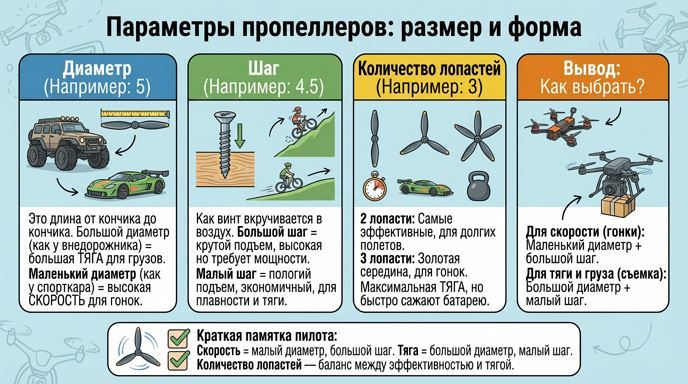
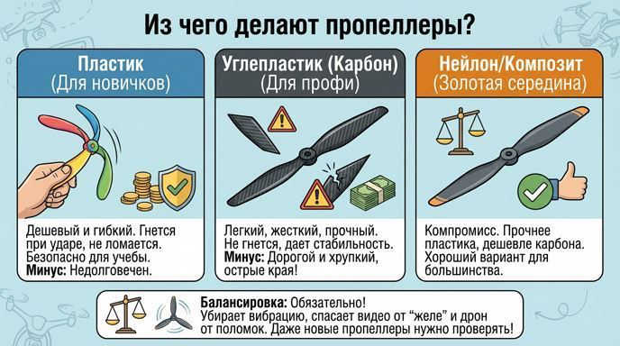
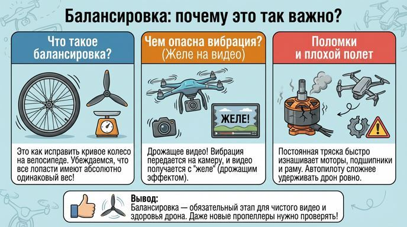

Крылья дрона: всё о пропеллерах
Привет! Сегодня мы поговорим о самом важном элементе дрона — пропеллерах. Это как крылья у птицы или колеса у машины. Именно они создают тягу и поднимают дрон в воздух. Давай разберемся, как они устроены и как выбрать нужные!
Параметры пропеллеров: размер и форма
У каждого пропеллера есть свои характеристики, которые определяют, как будет летать твой дрон. Посмотри на маркировку, например: 5x4.5x3. Это не просто цифры, а настоящий секретный код!
✔ Диаметр (первая цифра — 5): Это длина пропеллера от кончика до кончика. Представь, что пропеллер рисует в воздухе круг. Диаметр — это как раз размер этого круга.
Большой диаметр — как большие колеса у внедорожника. Он захватывает много воздуха и создает большую тягу. Идеален для подъема тяжелых грузов или плавного полета.
Маленький диаметр — как маленькие колеса у спортивной машины. Он крутится очень быстро и дает высокую скорость. То, что нужно для гонок!
✔ Шаг (вторая цифра — 4.5): Представь, что пропеллер вкручивается в воздух, как винт в дерево. Шаг — это расстояние, которое он проходил бы за один оборот, если бы воздух был твердым.
Большой шаг — это крутой подъем. Он толкает дрон вперед с большей силой, но требует больше мощности от мотора. Нужен для скорости.
Малый шаг — это пологий подъем. Он более «экономный», создает хорошую тягу, но не для высоких скоростей. Нужен для плавности и подъема грузов.
✔ Количество лопастей (третья цифра — 3):
2 лопасти — самые эффективные! Они создают хорошую тягу и потребляют мало энергии. Часто используются на больших дронах для долгих полетов.
3 лопасти — золотая середина. Дают больше тяги, чем двухлопастные, но немного менее эффективны. Самый популярный выбор для гоночных дронов.
4 лопасти и больше — максимальная тяга! Но они требуют много энергии и быстро сажают батарею. Используются для мощных дронов, где тяга важнее времени полета.

Из чего делают пропеллеры?
Материал пропеллера — это выбор между прочностью, ценой и гибкостью.
✔ Пластик: Дешевый и гибкий. Если такой пропеллер ударится о препятствие, он скорее погнется, чем сломается. Это безопасно и недорого. Отличный выбор для начинающих пилотов и тренировок. Но он недолговечен и может деформироваться от времени.
✔ Углепластик (Карбон): Профессиональный материал! Очень легкий, жесткий и прочный. Он не гнется во время полета, что обеспечивает максимальную стабильность и качество видео. Но он дорогой и хрупкий — при ударе может расколоться. Кроме того, его края очень острые — с ним нужно обращаться аккуратно.
✔ Нейлон (композит): Что-то среднее между пластиком и карбоном. Прочнее и стабильнее пластика, но дешевле и не такой хрупкий, как карбон. Хороший компромиссный вариант.

Балансировка: почему это так важно?
Представь, что на велосипеде у тебя кривое колесо. При езде оно будет бить и вибрировать. То же самое происходит с дроном, если его пропеллеры не сбалансированы.
✔ Что такое балансировка? Это процесс, когда мы убеждаемся, что все лопасти пропеллера имеют абсолютно одинаковый вес. Если одна лопасть чуть тяжелее, она будет создавать биение.
✔ Чем опасна вибрация?
Дрожащее видео: Вибрация передается на камеру, и видео получается с «желе» (дрожащим эффектом).
Поломки: Постоянная трясь быстро изнашивает моторы, подшипники и саму раму дрона.
Плохой полет: Автопилоту сложнее удерживать дрон ровно, полет становится менее стабильным.
Даже дорогие карбоновые пропеллеры часто приходят неидеально сбалансированными. Поэтому настоящие профессионалы всегда балансируют их перед установкой.

Краткая памятка:
Представь, что на велосипеде у тебя кривое колесо. При езде оно будет бить и вибрировать. То же самое происходит с дроном, если его пропеллеры не сбалансированы.
✔ Для скорости:маленький диаметр + большой шаг.
✔ Для тяги и груза: большой диаметр + малый шаг.
✔ Пластик — дешевый и безопасный для учебы.
✔ Карбон — профессиональный, для качества и скорости.
✔ Балансировка — обязательный этап для чистого видео и здоровья дрона.
Теперь ты знаешь, что пропеллер — это не просто кусок пластика, а сложный и важный элемент! Удачных полетов.
Навигация по образовательному курсу
Урок 1. Мир дронов: история, виды и правила безопасности
Урок 2. Рама. Варианты исполнения.
Урок 3. Моторы, электродвигатели.
Урок 4. Пропеллеры.
Урок 5. Регулятор оборотов.
Урок 6. Контроллер полета (автопилот).
Урок 7. Приемник-передатчик (ПДУ).
Урок 8. Аккумуляторная батарея (АКБ). Виды и маркировка.
Урок 9. Вспомогательное оборудование.
Для перехода к следующему учебному материалу используйте кнопку «Вперед» в верхней навигации.